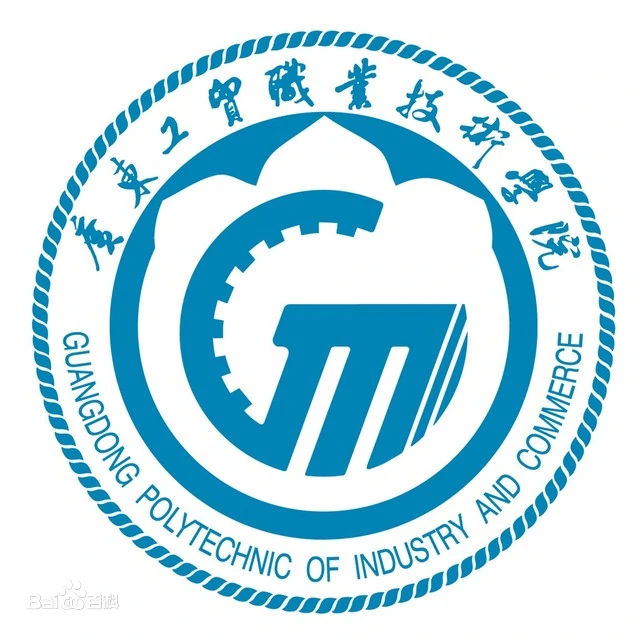

广东工贸职业技术学院 编辑 讨论2 上传视频
guangdong college of industry and commerce
同义词 广东工贸一般指广东工贸职业技术学院
广东工贸职业技术学院是广东省人民政府直属的全日制普通高等职业院校，是广东省示范性高等职业院校、广东省18所全国一流高职院校建设单位之一。 [1]
广东工贸职业技术学院的前身是冶金工业部于1957年创办的广东省冶金工业学校，1984年9月21日划转给中国有色金属工业总公司并更名为广州有色金属工业学校，1999年3月31日划归广东省人民政府管理，1999年10月7日与民办南华工商学院合并办学，2002年5月14日经广东省人民政府批准，设立广东工贸职业技术学院。
[2]
截至2018年6月，学院有天河和白云两个校区，占地面积1038亩，设有11个教学机构、35个专科专业，有专任教师640人，全日制在校生规模达15000人。 [1]
2019年12月，被教育部、财政部列入第四类高水平专业群建设单位（C档）。 [3]

主管部门
广东省
学校官网
http://www.gdgm.cn
学校概况
招生简章
目录
1 办学历史
2 办学条件
▪ 院系设置
▪ 师资力量
▪ 教学建设
▪ 合作交流
3 学术研究
▪ 科研成果
▪ 科研平台
▪ 学术资源
4 文化传统
▪ 形象标识
▪ 精神文化
5 现任领导
6 学校荣誉
基本信息
中文名
广东工贸职业技术学院
外文名
Guangdong Polytechnic of Industry and Commerce（GDPIC）
简 称
广东工贸
创办时间
1957年
办学性质
公立大学
学校类别
理工
学校特色
全日制普通高等职业院校
广东省全国一流高职院校建设单位（2012年）
广东省示范性高等职业院校（2016年）
中国特色高水平高职学校和专业建设计划 [4]
主管部门
广东省
现任领导
校长：何汉武
高职专业
35个
院系设置
机电工程学院、汽车工程学院、计算机与信息工程学院、测绘遥感信息学院、工商管理学院等
校 训
寻真求是、格物致知
校 歌
《放飞梦想》
校庆日
每年12月的第一个星期六
地 址
天河校区：广州市天河区广州大道北1098号
白云校区：广州市白云区钟落潭镇广从九路980号
院校代码
12959
主要奖项
2017年度广东高校共青团工作先进单位
办学历史
编辑
1957年，广东省冶金工业学校创办。
学校中心楼
学校中心楼
1984年9月21日，广东省冶金工业学校划转给中国有色金属工业总公司并更名为广州有色金属工业学校。
1999年3月31日，广州有色金属工业学校划归广东省人民政府管理；10月7日，广州有色金属工业学校与民办南华工商学院合并办学。
2002年5月14日，经广东省人民政府批准，设立广东工贸职业技术学院。 [2]
2008年，学院首批通过第二轮高等职业院校人才培养工作评估。
2016年，通过第二批广东省示范性高等职业院校建设项目验收。
2016年11月，成为广东省18所一流高职院校建设单位。 [5]
2019年12月，被教育部、财政部列入第四类高水平专业群建设单位（C档）。 [3]
办学条件
编辑